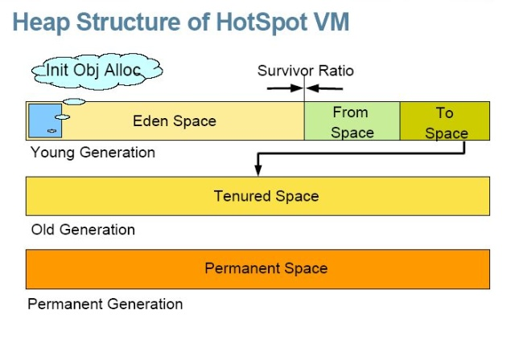
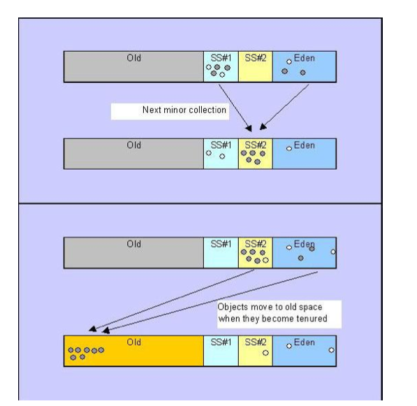

JVM内存机制和垃圾回收GC
JVM内存基础
JVM堆
Java对象的活动空间，程序中的类的对象从中分配空间，其存储着正在运行着的应用程序用到的所有对象。 对象的建立方式就是那些new一类的操作，当对象无用后，是GC来负责这个无用的对象。
分类：
- 新域：存储所有新成生的对象
- Eden:
- From Space: 简称A空间
- To Space: 简称B空间
- 旧域：新域中的对象，经过了一定次数的GC循环后，被移入旧域
- 永久域：存储类和方法对象，从配置的角度看，这个域是独立的，不包括在JVM堆内。默认为4M。

一个2G堆大小的JVM，可能总共占用多少内存的？
- 堆内存 ＋ 线程数 ＊ 线程栈 ＋ 永久代 ＋ 二进制代码 ＋ 堆外内存
- 堆内存： 存储Java对象，默认为物理内存的1/64
- 线程栈： 存储局部变量（原子类型，引用）及其他，默认为1M
- 永久代： 存储类定义及常量池，注意JDK7/8的区别
- 二进制代码：JDK7与8，打开多层编译时的默认值不一样，从48到240M
- 堆外内存： 被Netty，堆外缓存等使用，默认最大值约为堆内存大小
堆内存设置为2G，那一个有1000个线程的JVM可能需要:2G + 1000 * 1M + 256M + 48/240M + (～2G) = 5.5G (3.5G)
垃圾回收GC
目的：在堆中，找到已经无用的对象，并把这些对象占用的空间收回使其可以重新利用。
算法思路：
- 把所有对象组成一个树状结构集合
- 从树根开始找，只要可以找到的都是活动对象，如果找不到，这个对象就应该被回收
- 对于新域(MinorGC)，采用coping算法(copy collect)，目的是为了克服句柄的开销和解决堆碎片的垃圾回收
- 开始时把堆划分为一块较大的Eden和二块较小的Survior区域（From Space和To Space），在Hotspot中，默认比例是8:1:1
- 对于新生成的对象，都放在Eden中；当Eden充满时，GC开始:
- 首先停止应用程序的运行，开始GC，从根集中扫描活动对象，把所有可找到的对象都复制到A空间中，然后Eden会清空，实践表明98％的新生代的对象都是朝生夕死
- 一旦当A空间充满，GC就把在A空间中可找到的对象都复制到B空间中(会覆盖原有的存储对象，活动对象所占的内存之间没有空闲洞)
- 当B空间满的时间，GC就把在B空间中可找到的对象都复制到A空间中，AB在这个过程中互换角色
- 活动对象经过一定次数（小于-XX:MaxTenuringThreshold(默认为 31 次)次）的GC操作后，就会被放到旧域中
- 对于旧域(MajorGC/FullGC)，采用tracing算法的一种(mark sweep/mark compatc)，称为标记-清除-压缩收集器，注意，压缩，这是个开销挺大的操作，用户线程都会被block

案例
# 内存监控的方法: jmap -heap pid(查看java 堆（heap）使用情况)
/usr/java/jdk1.8.0_162/bin/jmap -heap 87303 > jmap_87303.txt
# 内容如下：
Attaching to process ID 87303, please wait...
Debugger attached successfully.
Server compiler detected.
JVM version is 25.162-b12
using thread-local object allocation.
Parallel GC with 23 thread(s) # GC方式
Heap Configuration: # 堆内存初始化配置
MinHeapFreeRatio = 0 # -XX:MinHeapFreeRatio设置JVM堆最小空闲比率(default 40)
MaxHeapFreeRatio = 100 # -XX:MaxHeapFreeRatio设置JVM堆最大空闲比率(default 70)
MaxHeapSize = 536870912 (512.0MB) # -XX:MaxHeapSize=设置JVM堆的最大
NewSize = 178782208 (170.5MB) # -XX:NewSize=设置JVM堆的‘新生代’的默认大小
MaxNewSize = 178782208 (170.5MB) # -XX:MaxNewSize=设置JVM堆的‘新生代’的最大
OldSize = 358088704 (341.5MB) # -XX:OldSize=<value>:设置JVM堆的‘老生代’的大小
NewRatio = 2 # -XX:NewRatio=:‘新生代’和‘老生代’的大小比
SurvivorRatio = 8 # -XX:SurvivorRatio=设置年轻代中Eden区与Survivor区的大小比
MetaspaceSize = 21807104 (20.796875MB) # -XX:PermSize=<value>:设置JVM堆的‘永生代’的初始大小（现在是jdk8）
CompressedClassSpaceSize = 1073741824 (1024.0MB)
MaxMetaspaceSize = 17592186044415 MB # -XX:MaxPermSize=<value>:设置JVM堆的‘永生代’的最大（现在是jdk8）
G1HeapRegionSize = 0 (0.0MB)
Heap Usage: # 堆内存分布
PS Young Generation
Eden Space: # Eden区内存分布
capacity = 174587904 (166.5MB) # Eden区总容量
used = 4099296 (3.909393310546875MB) # Eden区已使用
free = 170488608 (162.59060668945312MB) #Eden区剩余容量
2.3479839702984235% used # Eden区使用比率
From Space: # Survivor区（A区）的内存分布
capacity = 2097152 (2.0MB)
used = 0 (0.0MB)
free = 2097152 (2.0MB)
0.0% used
To Space: # 另一个Survivor区（B区）的内存分布
capacity = 2097152 (2.0MB)
used = 0 (0.0MB)
free = 2097152 (2.0MB)
0.0% used
PS Old Generation # Old区内存分布
capacity = 358088704 (341.5MB)
used = 78736888 (75.08934783935547MB)
free = 279351816 (266.41065216064453MB)
21.988095999811264% used
38991 interned Strings occupying 3906872 bytes.
# 这台机器简单说YG内存1G，OG内存2G，总内存4G
# 在这样的配置下，GC运行情况：
/usr/java/jdk1.8.0_162/bin/jstat -gcutil -h5 87303 4s 100
S0 S1 E O M CCS YGC YGCT FGC FGCT GCT
0.00 0.00 5.51 22.00 98.42 96.83 32997 157.912 32954 4507.634 4665.547
0.00 0.00 6.00 22.00 98.42 96.83 32997 157.912 32954 4507.634 4665.547
0.00 0.00 6.33 22.00 98.42 96.83 32997 157.912 32954 4507.634 4665.547
0.00 0.00 6.94 22.00 98.42 96.83 32997 157.912 32954 4507.634 4665.547
0.00 0.00 15.80 22.00 98.42 96.83 32997 157.912 32954 4507.634 4665.547
S0 S1 E O M CCS YGC YGCT FGC FGCT GCT
0.00 0.00 16.37 22.00 98.42 96.83 32997 157.912 32954 4507.634 4665.547 # 发生了一次YG GC，也就是MinorGC，耗时0.3s（4665.847 - 4665.547）
0.00 0.00 0.56 22.02 98.42 96.83 32999 157.921 32956 4507.926 4665.847
0.00 0.00 1.33 22.02 98.42 96.83 32999 157.921 32956 4507.926 4665.847
0.00 0.00 1.75 22.02 98.42 96.83 32999 157.921 32956 4507.926 4665.847
小结
- JVM堆的大小决定了GC的运行时间。如果JVM堆的大小超过一定的限度，那么GC的运行时间会很长。
- 对象生存的时间越长，GC需要的回收时间也越长，影响回收速度。
- 大多数对象都是短命的，所以，尽可能让这些对象的生存期在GC的一次运行周期内
- 应用程序中，建立与释放对象的速度决定了垃圾收集的频率。
- 如果GC一次运行周期超过3-5秒，这会很影响应用程序的运行，如果可以，应该减少JVM堆的大小。
- 通常情况下，JVM堆的大小应为物理内存的80%（经验值）
Java启动参数
参数定义
- Xss：每个线程的stack大小（栈），默认每条线程为1M，存放方法调用出参入参的栈、局部变量、标量替换后的局部变量等
- 设小点节约内存开更多线程，OS对一个进程内的线程数有限制，不能无限生成，经验值在3000~5000
- 有JSON解析之类的递归调用时不能设太小
- Xms：JAVA HEAP的初始值，默认为物理内存的1/64，server端最好Xms与Xmx一样
- Xmx：JAVA HEAP的最大值、默认为物理内存的1/4（只有运行在 server 模式下的时候才是 min(1G, 物理内存的四分之一)）
-Xms2g -Xmx2g比较合适的数值是2-4g，再大就得考虑GC时间- Xmn：JAVA HEAP young区的大小，默认新生代占堆内存大小的1/3（-XX:NewRatio=2）
-Xmn1g 或 -XX:NewRatio=1-XX:NewRatio=4设置年轻代（包括Eden和两个Survivor区）与年老代的比值（除去持久代）。设置为4，则年轻代与年老代所占比值为1:4，年轻代占整个堆栈的1/5-XX:SurvivorRatio=4设置年轻代中Eden区与Survivor区的大小比值。设置为4，则两个Survivor区与一个Eden区的比值为2:4，一个Survivor区占整个年轻代的1/6-XX:MaxTenuringThreshold=0设置垃圾最大年龄。如果设置为0的话，则年轻代对象不经过Survivor区，直接进入年老代，对于年老代比较多的应用，可以提高效率- 设置为一个较大值，则年轻代对象会在Survivor区进行多次复制，可以增加对象再年轻代的存活时间
- XX:PermSize：设定内存的永久保存区域
- XX:MaxPermSize：设定最大内存的永久保存区域，几乎可用完机器的所有内存
-server下默认MaxPermSize为64m- MaxPermSize设置过小会导致
java.lang.OutOfMemoryError: PermGen space - 在JDK1.8中，取消了PermGen，取而代之的是Metaspace
- 举例：
-XX:MetaspaceSize=128m -XX:MaxMetaspaceSize=512m
- 举例：
回收算法
–XX:+UseSerialGC强制 java -client 默认会使用, 速度慢。服务器应用不推荐。–XX:+UseParallelGClinux x64上默认，其他平台要加 -server 才会选用- young = parallel，多个thread同时copy; old = mark-sweep-compact = 1
- 优点：新生代回收更快。因为系统大部分时间做的gc都是新生代的
- 缺点：当运行在8G/16G server上old generation live object太多时候pause time过长
–XX:+UseParallelOldGC- young = parallel = 2; old = parallel，分成多个独立的单元，如果单元中live object少则回收，多则跳过
- 优点：old generation上性能较 parallel 方式有提高
- 缺点：大部分server系统old generation内存占用会达到60%-80%, 没有那么多理想的单元live object很少方便迅速回收，同时compact方面开销比起parallel并没明显减少
–XX:+UseConcMarkSweepGCConcurent Mark-Sweep(CMS) Collector- young generation = parallel collector = 2; old = cms，同时不做 compact 操作
- 优点：pause time会降低, pause敏感
- 缺点：cpu占用过多，cpu密集型服务器不适合。另外碎片太多，每个object的存储都要通过链表连续跳n个地方，空间浪费问题也会增大
# 查看JVM默认参数中的堆最大值
java -XX:+PrintFlagsFinal -version | grep HeapSize
# 纯jar启动，适用JDK7
java \
-Xmx512M \
-XX:MaxPermSize=128M \
-jar ./biz-1.0.0-SNAPSHOT.jar
# Tomcat启动
java \
-Djava.util.logging.config.file=/usr/local/tomcat/conf/logging.properties \
-Djava.util.logging.manager=org.apache.juli.ClassLoaderLogManager \
-Djdk.tls.ephemeralDHKeySize=2048 \
-Dignore.endorsed.dirs= \
-classpath /usr/local/tomcat/bin/bootstrap.jar:/usr/local/tomcat/bin/tomcat-juli.jar \
-Dcatalina.base=/usr/local/tomcat \
-Dcatalina.home=/usr/local/tomcat \
-Djava.io.tmpdir=/usr/local/tomcat/temp org.apache.catalina.startup.Bootstrap start